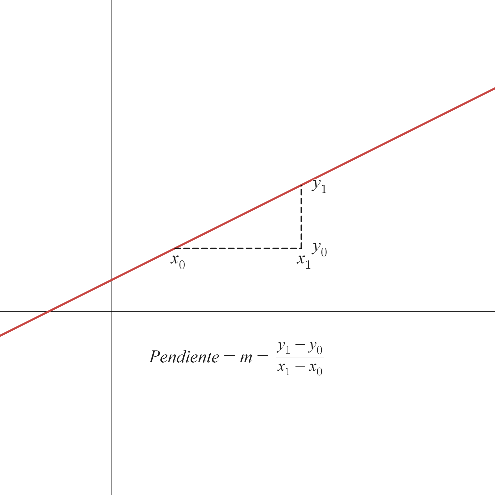
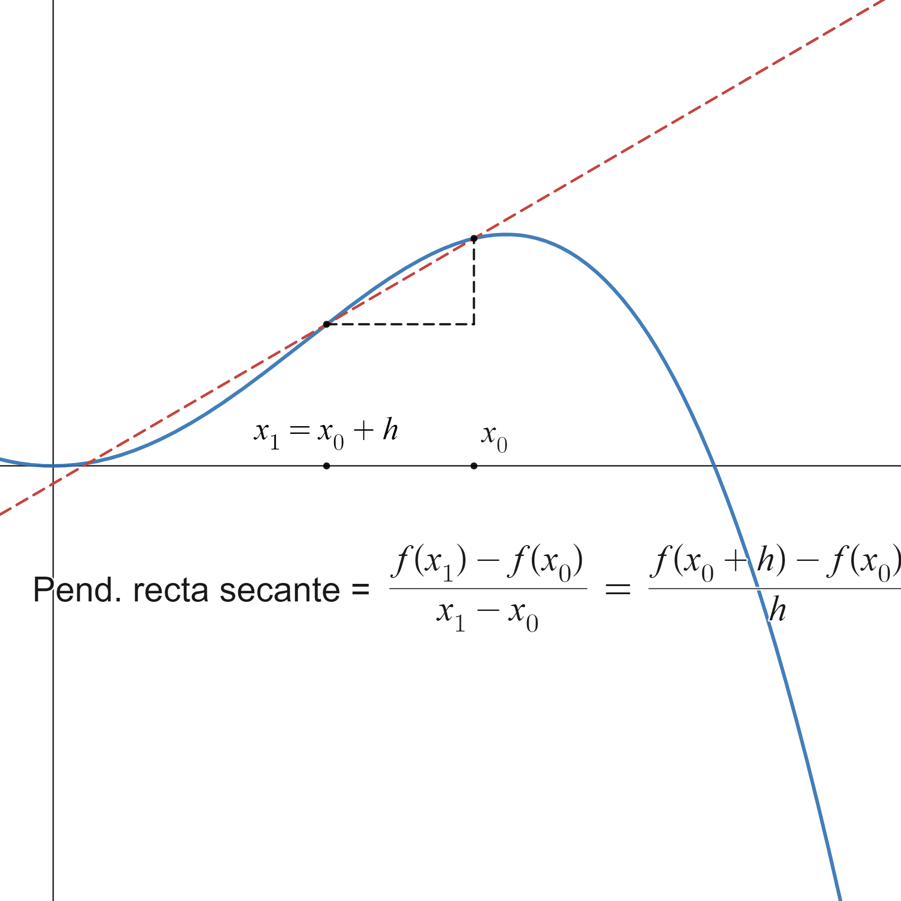

3.1. Definition of derivative and basic properties#
3.1.1. Definition of derivative#
Let’s introduce this new concept through an example. For this we copy Galileo’s famous experiment on the Tower of Pisa and we ask ourselves:
Suppose we drop a ball from the top of a building. \(300\) m. What will be the speed of the ball after 5 seconds?
Galileo concluded that the space traveled is directly proportional squared of the elapsed time, according to the formula
formula that is very close to reality… as long as we neglect friction exerted by the air.
So how do we find the speed at \(t=5\) seconds? We can make a average speed:
or, better yet,
Really, what we are doing is approximating the slope of the tangent line to the function \(s\) at the point \(t=5\). Let us remember, first of all, that the slope of a line is the tangent of the angle it forms with the \(OX\) axis, as shown in the following figure:
{kind=link}

If we now want to compute the slope of the tangent line to a function \(f\) at a point \(x_0\), what we do is compute the slopes of the secant lines to \(f\) through two nearby points, \(x_0\) and \(x\), and then make \(x\) approach \(x_0\) (that is, take the limit as \(x\to x_0\)). A graphical illustration of this process is shown in the following figure (which, by the way, you can explore at the following link: https://www.desmos.com/calculator/piskepauzm):
{kind=link}

Definition
Let \(f:(a,b)\rightarrow\mathbb{R}\) and \(x_0\in(a,b)\). We define the derivative of \(f\) at \(x_0\) as the limit, if it exists,
Remark
Here we already see the usefulness of not including the point \(x_0\) (in this case, the point \(h=0\)) in the definition of a limit. In the expression \(\displaystyle\lim_{h\to 0}\frac{f(x_0+h)-f(x_0)}{h}\) we cannot do anything if \(h=0\), because we would have division by \(0\). Fortunately, the point \(h=0\) is not included in the definition of a limit (remember the condition \(0<|h|<\delta\)…).
The quotient \(\frac{f(x)-f(x_0)}{x-x_0}\) measures the variation of the function with respect to the variation of the variable. For that reason, \(f'(x_0)\) is sometimes called the rate of change of \(f\) at the point \(x_0\).
In other words, the derivative of a function at a point indicates the instantaneous rate of change of the function at that point. For example, acceleration, which is the variation of velocity, is written mathematically as \(\frac{dv}{dt}\), that is, the derivative of velocity with respect to time.
The interpretation of the derivative as the instantaneous change of a dependent variable \(y\) with respect to an independent variable \(x\) will be fundamental when we study mathematical models in differential equations.
We can now compute the equation of the tangent line using the point-slope formula,
\[ y-y_0=m(x-x_0)\Longrightarrow y=y_0+m(x-x_0). \]In this case, \(\left(x_0,y_0\right)=\left(x_0,f(x_0)\right)\), \(m=f'(x_0)\). Therefore, the tangent line is
\[ y=f(x_0)+f'(x_0)(x-x_0). \]
3.1.2. One-sided derivatives#
Now, since we are defining the derivative as a limit, we can talk about the left-hand derivative and the right-hand derivative.
Definition (One-sided derivatives)
Let \(f:(a,b)\rightarrow\mathbb{R}\) and \(x_0\in(a,b)\). We define
the left-hand derivative of \(f\) at \(x_0\) by
\[ f'(x_0^{-}):=\lim_{h\to 0^{-}}\frac{f(x_0+h)-f(x_0)}{h}, \]the right-hand derivative of \(f\) at \(x_0\) by
\[ f'(x_0^{+}):=\lim_{h\to 0^{+}}\frac{f(x_0+h)-f(x_0)}{h}. \]
Property
Let \(f:(a,b)\rightarrow\mathbb{R}\) and \(x_0\in(a,b)\). The function \(f\) is differentiable at \(x_0\) if and only if it has left-hand and right-hand derivatives at \(x_0\) and those derivatives coincide.
The most typical example of a non-differentiable function is the absolute value function, which is not differentiable at \(0\). Recall that
Therefore,
Hence \(f'(0^{-})\neq f'(0^{+})\), so the absolute value function is not differentiable at \(0\).
3.1.3. Derivation properties#
Let us now look at some important properties of the derivative.
Property
Let \(f:(a,b)\rightarrow\mathbb{R}\) and \(x_0\in(a,b)\). If \(f\) is differentiable at \(x_0\), then \(f\) is continuous at \(x_0\).
This property can be summarized as
The most common way to apply it is through the contrapositive: if a function is not continuous at a point, then it cannot be differentiable there.
Property (Elementary derivatives)
\(\displaystyle \dfrac{d}{dx}(x^{n}) = nx^{n-1}\),
\(\displaystyle \dfrac{d}{dx}(\ln x) = \dfrac{1}{x}\),
\(\displaystyle \dfrac{d}{dx}(e^x) = e^x\),
\(\displaystyle \dfrac{d}{dx}(\sin x) = \cos x\),
\(\displaystyle \dfrac{d}{dx}(\cos x) = -\sin x\),
\(\displaystyle \dfrac{d}{dx}(\tan x) = \dfrac{1}{\cos^2 x}\),
\(\displaystyle \dfrac{d}{dx}(\arcsin x) = \dfrac{1}{\sqrt{1-x^2}}\),
\(\displaystyle \dfrac{d}{dx}(\arccos x) = -\dfrac{1}{\sqrt{1-x^2}}\),
\(\displaystyle \dfrac{d}{dx}(\arctan x) = \dfrac{1}{1+x^2}\).
Property (Arithmetic properties of the derivative)
Let \(f,g:(a,b)\rightarrow\mathbb{R}\) be differentiable at \(x_0\in(a,b)\). Then
for every \(\lambda\in\mathbb{R}\), \(\lambda f\) is differentiable at \(x_0\) and \((\lambda f)'(x_0)=\lambda f'(x_0)\),
\(f\pm g\) is differentiable at \(x_0\) and \((f\pm g)'(x_0)=f'(x_0)\pm g'(x_0)\),
\(fg\) is differentiable at \(x_0\) and \((fg)'(x_0)=f'(x_0)g(x_0)+f(x_0)g'(x_0)\),
if \(g(x_0)\neq 0\), then \(\dfrac{f}{g}\) is differentiable at \(x_0\) and
Property (Chain rule)
Let \(f:(a,b)\rightarrow\mathbb{R}\) be differentiable at \(x_0\in(a,b)\) and let \(g:f(a,b)\to\mathbb{R}\) be differentiable at \(f(x_0)\). Then the composition \(g\circ f\) is differentiable at \(x_0\) and
3.1.4. Derivation in Sympy#
To symbolically calculate the first derivative of a function using Sympy, the diff function is used. For example
import sympy as sp
x=sp.symbols('x')
f_exp=sp.exp(x)*sp.cos(x)
d1f_exp=sp.diff(f_exp,x)
print('For the function: ',f_exp)
print('The first derivative is: ',d1f_exp)
For the function: exp(x)*cos(x)
The first derivative is: -exp(x)*sin(x) + exp(x)*cos(x)
3.1.5. Differentiation of some special cases#
3.1.5.1. Derivative of the inverse function#
Suppose \(f:(a,b)\to\mathbb{R}\) is differentiable at \(x_0\in(a,b)\) and that \(f'(x_0)\neq 0\). Then, if \(f^{-1}\) exists, it is differentiable at \(f(x_0)\) and
that is,
3.1.5.2. Implicit differentiation#
An implicit equation is an equation of the form \(F(x,y)=0\), where \(x\) and \(y\) appear mixed together and it is usually not possible to solve explicitly for \(y\) as a function of \(x\).
For example, if
then differentiating term by term gives
3.1.5.3. Logarithmic differentiation#
If we have an expression of the form \(y=f(x)^{g(x)}\), we first apply logarithms:
and then differentiate implicitly.
3.1.6. L’Hôpital’s rule#

(Image taken from the Twitter account @MathMatize, specifically from https://twitter.com/MathMatize/status/1678166772359348225)
When we apply arithmetic properties of limits, unpleasant surprises may appear when one of the pieces tends to \(+\infty\) or \(-\infty\). For that reason, it is useful to summarize some basic rules of infinity arithmetic.
Property (Operations with infinite limits)
Sum:
\(\lambda+\infty=+\infty\), \(\forall\lambda\in\mathbb{R}\),
\(\lambda-\infty=-\infty\), \(\forall\lambda\in\mathbb{R}\),
\(+\infty+\infty=+\infty\),
\(-\infty-\infty=-\infty\).
Product:
\(\lambda(\pm\infty)=\pm\infty\), \(\forall\lambda>0\),
\(\lambda(\pm\infty)=\mp\infty\), \(\forall\lambda<0\),
\((+\infty)(+\infty)=(-\infty)(-\infty)=+\infty\),
\((+\infty)(-\infty)=(-\infty)(+\infty)=-\infty\).
Quotient:
\(\displaystyle\frac{\lambda}{\pm\infty}=0\), \(\forall\lambda\in\mathbb{R}\), \(\lambda\neq 0\),
\(\displaystyle\frac{\lambda}{0^{+}}=+\infty\), \(\displaystyle\frac{\lambda}{0^{-}}=-\infty\), \(\forall\lambda>0\),
\(\displaystyle\frac{\lambda}{0^{+}}=-\infty\), \(\displaystyle\frac{\lambda}{0^{-}}=+\infty\), \(\forall\lambda<0\),
\(\displaystyle\frac{0}{\pm\infty}=0\).
Powers:
\(\displaystyle 0^{+\infty}=0\),
\(\displaystyle 0^{-\infty}=+\infty\),
\(\displaystyle (+\infty)^{+\infty}=+\infty\),
\(\displaystyle (+\infty)^{-\infty}=0\).
Some forms are indeterminate, meaning that the result depends on the particular case:
Property (Indeterminate forms)
\(\displaystyle \frac{0}{0}\),
\(\displaystyle \frac{\pm\infty}{\pm\infty}\),
\(\displaystyle 0(\pm\infty)\),
\(\displaystyle +\infty-\infty\),
\(\displaystyle 1^{\pm\infty}\),
\(\displaystyle 0^{0}\),
\(\displaystyle (\pm\infty)^0\).
In many cases these indeterminate forms can be resolved using L’Hôpital’s rule.
Theorem (L’Hôpital’s rule)
Let \(x_0\in\mathbb{R}\) and let \(f\) and \(g\) be differentiable on \(\left(x_0-r,x_0\right)\cup\left(x_0,x_0+r\right)\).
If \(\displaystyle\lim_{x\to x_0}f(x)=\displaystyle\lim_{x\to x_0}g(x)=0\) and the limit \(\displaystyle\lim_{x\to x_0}\dfrac{f'(x)}{g'(x)}\) exists, then the limit \(\displaystyle\lim_{x\to x_0}\dfrac{f(x)}{g(x)}\) also exists and
Remark
The converse is false.
The statement also remains valid in the case \(\pm\infty/\pm\infty\) and when \(x_0=\pm\infty\).
If another indeterminate form of type \(0/0\) or \(\infty/\infty\) appears after differentiating, and the hypotheses are still satisfied, L’Hôpital’s rule can be applied again.
The indeterminate forms \(0\cdot\infty\), \(+\infty-\infty\), \(0^0\), \(\infty^0\), and \(1^\infty\) can often be transformed into forms that L’Hôpital’s rule can handle.